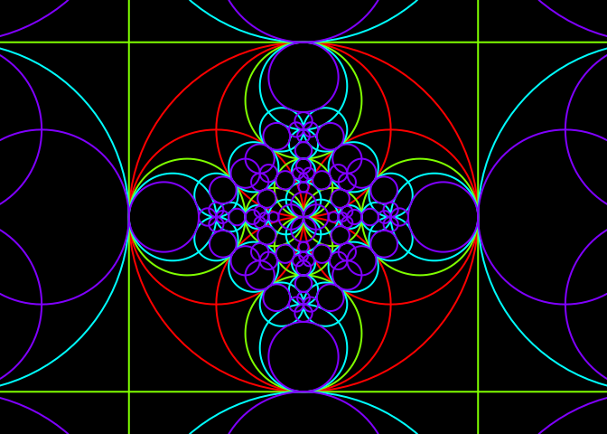

Generalized circles and inversions
Let \(\iota_0\) be the inversion with respect to the unit circle: \[ \iota_0(z) = \frac{1}{\bar{z}}, \quad z \neq 0. \]
Consider a generalized circle \(\mathcal{G}\mathcal{C}\) having equation \[ \boxed{Az\bar{z} + \bar{\gamma}z + \gamma\bar{z} = D} \] which is equivalent, by dividing by \(z\bar{z}\), to \[ A + \bar{\gamma}\frac{1}{\bar{z}} + \gamma\frac{1}{z} = \frac{D}{z\bar{z}}. \]
Plugging \(z = \iota_0^{-1}(w) = 1/\bar{w}\) into this equation, we get the following equation of \(\iota_0(\mathcal{G}\mathcal{C})\): \[ A + \bar{\gamma}w + \gamma\bar{w} = D w\bar{w} \\ \iff \, \boxed{D w\bar{w} - \bar{\gamma}w - \gamma\bar{w} = A}. \] This is the equation of a generalized circle.
Now consider the inversion \(\iota\) with respect to the circle of center \(c\) and radius \(r\): \[ \iota(z) = c + \frac{r^2}{\overline{z-c}}, \quad z \neq c. \]
One has \[ \iota = f^{-1} \circ \iota_0 \circ f \] where \(f(z) = \frac{z-c}{r}\), and \(f^{-1}(z) = rz + c\).
The transformation \(f\) is a “scaling-translation”. It is clear that it maps a generalized circle to a generalized circle, and this also holds for \(f^{-1}\). Therefore, \(\iota\) maps any generalized circle to a generalized circle. This result is well-known. Here, we will give the equation of the image generalized circle.
Case when \(\mathcal{G}\mathcal{C}\) is a circle
Assume that \(\mathcal{G}\mathcal{C}\) is the circle \(\mathcal{C}_0\) with center \(z_0\) and radius \(R_0\). Then \(f(\mathcal{C_0})\) is the circle \(\mathcal{C_1}\) with center \(z_1 = \frac{z_0-c}{r}\) and radius \(R_1 = \frac{R_0}{r}\). It has equation \[ z\bar{z} - \bar{z_1}z - z_1\bar{z} = D_1 \] with \(D_1 = R_1^2-{|z_1|}^2\).
Then \(\iota_0(\mathcal{C_1})\) is the generalized circle having equation \[ D_1 z\bar{z} + \bar{z_1}z + z_1\bar{z} = 1. \]
Case \(D_1 \neq 0\)
If \(D_1 \neq 0\), the above equation of \(\iota_0(\mathcal{C_1})\) is the equation of a circle \(\mathcal{C}_2\) with center \(z_2 = -\frac{z_1}{D_1}\) and radius \[ R_2 = \sqrt{\frac{{|z_1|}^2}{D_1^2} + \frac{1}{D_1}}. \]
Now, \(f^{-1}(\mathcal{C}_2) = \iota(\mathcal{C}_0)\) is the circle with center \(r z_2 + c\) and radius \(r R_2\).
Case \(D_1 = 0\)
If \(D_1=0\), our equation of \(\iota_0(\mathcal{C_1})\) is \[ \bar{z_1}z + z_1\bar{z} = 1, \] which is the equation of a line \(\mathcal{L_2}\), with direction \(\theta_2 = \textrm{arg}(z_1)\) and offset \(d_2 = \frac{1}{2{|z_1|}^2}\).
Then \(f^{-1}(\mathcal{L}_2) = \iota(\mathcal{C}_0)\) is a line parallel to \(\mathcal{L}_2\), that is, its direction is \(\theta_2\). To get its offset, take a point \(w_2\) on \(\mathcal{L}_2\): \[ w_2 = \begin{cases} \dfrac{1}{2 \Re(z_1)} & \text{if } \Im(z_1) = 0 \\ \dfrac{i}{2 \Im(z_1)} & \text{if } \Im(z_1) \neq 0 \end{cases} \] and take its image \(w_3 = f^{-1}(w_2) = r w_2 + c\). Then the offset is \[ \cos(\theta_2) \Re(w_3) + \sin(\theta_2) \Im(w_3) \\ \qquad = \frac{\Re(z_1)}{|z_1|}\Re(w_3) + \frac{\Im(z_1)}{|z_1|}\Im(w_3). \]
Case when \(\mathcal{G}\mathcal{C}\) is a line
Now assume that \(\mathcal{G}\mathcal{C}\) is the line \(\mathcal{L}_0\) with direction \(\theta_0\) and offset \(d_0\). Its image \(f(\mathcal{L}_0)\) is a line \(\mathcal{L}_1\) parallel to \(\mathcal{L}_0\), that is the direction of \(\mathcal{L}_1\) is \(\theta_0\). To get its offset, take a point \(w_0\) on \(\mathcal{L}_0\): \[ w_0 = \begin{cases} \dfrac{d_0}{\cos(\theta_0)} & \text{if } \sin(\theta_0) = 0 \\ i\dfrac{d_0}{\sin(\theta_0)} & \text{if } \sin(\theta_0) \neq 0 \end{cases} \] and take its image \(w_1 = f(w_0) = \frac{w_0-c}{r}\). Then the offset of \(\mathcal{L}_1\) is \[ d_1 = \cos(\theta_0) \Re(w_1) + \sin(\theta_0) \Im(w_1) \] and the line \(\mathcal{L}_1\) has equation \[ \bar{\gamma_1}z + \gamma_1\bar{z} = D_1 \] with \(\gamma_1 = \cos(\theta_0) + i\sin(\theta_0)\) and \(D_1 = 2d_1\).
Therefore, \(\iota_0(\mathcal{L}_1)\) is the generalized circle having equation \[ D_1 z\bar{z} - \bar{\gamma_1}z - \gamma_1\bar{z} = 0. \]
Case \(D_1 \neq 0\)
If \(D_1 \neq 0\), then \(\iota_0(\mathcal{L}_1)\) is the circle \(\mathcal{C}_2\) with center \(z_2 = \frac{\gamma_1}{D_1}\) and radius \(R_2 = \frac{|\gamma_1|}{|D_1|}\). Then \(f^{-1}(\mathcal{C}_2) = \iota(\mathcal{L}_0)\) is the circle with center \(r z_2 + c\) and radius \(r R_2\).
Case \(D_1 = 0\)
If \(D_1 = 0\), then \(\iota_0(\mathcal{L}_1)\) is the line \(\mathcal{L}_2\) having equation \[ \bar{\gamma_1}z + \gamma_1\bar{z} = 0. \] Its direction is \(\textrm{arg}(\gamma_1) = \theta_0\) and its offset is \(0\).
Then \(f^{-1}(\mathcal{L}_2) = \iota(\mathcal{C}_0)\) is a line \(\mathcal{L}_3\) parallel to \(\mathcal{L}_2\), that is, its direction is \(\theta_0\). The line \(\mathcal{L}_2\) passes through \(0\), therefore the point \(f^{-1}(0) = c\) belongs to \(\mathcal{L}_3\). Consequently, the offset of \(\mathcal{L}_3\) is \[ \cos(\theta_0) \Re(c) + \sin(\theta_0) \Im(c). \]
R code
We firstly write a function iotaCircle which calculates the image of a circle.
# squared modulus
Mod2 <- function(z){
Re(z)^2 + Im(z)^2
}
# image of a circle
iotaCircle <- function(c, r, circle, tol = sqrt(.Machine$double.eps)){
z0 <- circle$center; R0 <- circle$radius
z1 <- (z0-c)/r
D1 <- (R0/r)^2 - Mod2(z1)
if(abs(D1) > tol){
z2 <- -z1/D1
R2 <- sqrt(Mod2(z2) + 1/D1)
out <- list(center = r*z2+c, radius = r*R2)
attr(out, "type") <- "circle"
}else{
theta2 <- Arg(z1) %% (2*pi)
w2 <- ifelse(Im(z1) == 0, 1/2/Re(z1), 1i/2/Im(z1))
w3 <- r*w2 + c
out <- list(
theta = theta2,
offset = (Re(z1)*Re(w3)+Im(z1)*Im(w3))/Mod(z1)
)
attr(out, "type") <- "line"
}
out
}Let’s check the function iotaCircle. To do so, we use the circumcircle function below, which returns the center and the radius of the circle passing by z1, z2, z3.
circumcircle <- function(z1,z2,z3){
x1 <- Re(z1); y1 <- Im(z1); p1 <- c(x1,y1)
x2 <- Re(z2); y2 <- Im(z2); p2 <- c(x2,y2)
x3 <- Re(z3); y3 <- Im(z3); p3 <- c(x3,y3)
a <- det(cbind(rbind(p1,p2,p3),1))
q1 <- c(crossprod(p1)); q2 <- c(crossprod(p2)); q3 <- c(crossprod(p3))
q <- c(q1,q2,q3)
x <- c(x1,x2,x3)
y <- c(y1,y2,y3)
Dx <- det(cbind(q,y,1))
Dy <- -det(cbind(q,x,1))
c <- det(cbind(q,x,y))
center <- c(Dx,Dy)/a/2
r <- sqrt(c(crossprod(center-p1)))
list(center = center[1] + 1i*center[2], radius = r)
}Now let’s check iotaCircle.
# define iota
c <- 1 + 2i; r <- 3
iota <- function(z){
c + r^2/Conj(z-c)
}
# define C0 - a case when iota(C0) is a circle ####
z0 <- 2 + 3i; R0 <- 2
iotaCircle(c, r, circle = list(center = z0, radius = R0))
## $center
## [1] -3.5-2.5i
##
## $radius
## [1] 9
##
## attr(,"type")
## [1] "circle"
circumcircle(iota(z0+R0), iota(z0-R0), iota(z0+1i*R0))
## $center
## [1] -3.5-2.5i
##
## $radius
## [1] 9
# now, a case when iota(C0) is a line ####
R0 <- sqrt(2)
w1 <- iota(z0+R0); w2 <- iota(z0-R0); w3 <- iota(z0+1i*R0)
(w2-w1)/(w3-w1) # aligned <=> Im = 0
## [1] 3.414214+0i
(L <- iotaCircle(c, r, circle = list(center = z0, radius = R0)))
## $theta
## [1] 0.7853982
##
## $offset
## [1] 5.303301
##
## attr(,"type")
## [1] "line"
cos(L$theta)*Re(w1) + sin(L$theta)*Im(w1) # = L$offset
## [1] 5.303301
cos(L$theta)*Re(w2) + sin(L$theta)*Im(w2) # = L$offset
## [1] 5.303301
cos(L$theta)*Re(w3) + sin(L$theta)*Im(w3) # = L$offset
## [1] 5.303301Now we write a function iotaLine which calculates the image of a line.
iotaLine <- function(c, r, line, tol = sqrt(.Machine$double.eps)){
theta0 <- line$theta; d0 <- line$offset
w0 <- ifelse(sin(theta0) == 0, d0/cos(theta0), 1i*d0/sin(theta0))
w1 <- (w0-c)/r
D1 <- 2 * (cos(theta0)*Re(w1) + sin(theta0)*Im(w1))
if(abs(D1)>tol){
gamma1 <- cos(theta0) + 1i*sin(theta0)
z2 <- gamma1/D1
R2 <- Mod(gamma1/D1)
out <- list(center = r*z2+c, radius = r*R2)
attr(out, "type") <- "circle"
}else{
out <- list(
theta = theta0,
offset = cos(theta0)*Re(c)+sin(theta0)*Im(c)
)
attr(out, "type") <- "line"
}
out
}Let’s check iotaLine. Firstly, a case when the image is a circle.
# define L0
theta0 <- 1; d0 <- 2
theta0 <- pi/4; d0 <- 0
# take three points on iota(L0)
x <- c(0,1,2)
y <- (d0 - cos(theta0)*x) / sin(theta0)
w1 <- iota(x[1] + 1i*y[1])
w2 <- iota(x[2] + 1i*y[2])
w3 <- iota(x[3] + 1i*y[3])
# check
circumcircle(w1,w2,w3)
## $center
## [1] -0.5+0.5i
##
## $radius
## [1] 2.12132
iotaLine(c, r, list(theta = theta0, offset = d0))
## $center
## [1] -0.5+0.5i
##
## $radius
## [1] 2.12132
##
## attr(,"type")
## [1] "circle"Now a case when the image is a line.
# define iota
c <- 1-1i
iota <- function(z){
c + r^2/Conj(z-c)
}
# define L0
theta0 <- pi/4; d0 <- 0
# take three points on iota(L0)
x <- c(0,2,4)
y <- (d0 - cos(theta0)*x) / sin(theta0)
w1 <- iota(x[1] + 1i*y[1])
w2 <- iota(x[2] + 1i*y[2])
w3 <- iota(x[3] + 1i*y[3])
# check
(w2-w1)/(w3-w1) # aligned <=> Im = 0
## [1] 1.5+0i
( L <- iotaLine(c, r, list(theta = theta0, offset = d0)) )
## $theta
## [1] 0.7853982
##
## $offset
## [1] 1.110223e-16
##
## attr(,"type")
## [1] "line"
cos(L$theta)*Re(w1) + sin(L$theta)*Im(w1) # = L$offset
## [1] -4.440892e-16
cos(L$theta)*Re(w2) + sin(L$theta)*Im(w2) # = L$offset
## [1] -4.440892e-16
cos(L$theta)*Re(w3) + sin(L$theta)*Im(w3) # = L$offset
## [1] -4.440892e-16Finally, let’s put things together in a single function.
iotaGcircle <- function(c, r, gcircle){
if(attr(gcircle, "type") == "circle"){
iotaCircle(c, r, gcircle)
}else{
iotaLine(c, r, gcircle)
}
}Illustration
We will make a beautiful picture of inverted circles. This is borrowed from this circle inversion gallery.
Firstly, let’s write a function which draws a generalized circle. We use the draw.circle function of the plotrix package.
library(plotrix)
drawLine <- function(line, ...){
theta <- line$theta; offset <- line$offset
if(sin(theta) != 0){
abline(a = offset/sin(theta), b = -1/tan(theta), ...)
}else{
abline(v = offset/cos(theta), ...)
}
}
drawCircle <- function(circle, ...){
draw.circle(Re(circle$center), Im(circle$center), circle$radius, ...)
}
drawGcircle <- function(gcircle, color = "black", ...){
if(attr(gcircle, "type") == "circle"){
drawCircle(gcircle, border = color, ...)
}else{
drawLine(gcircle, col = color, ...)
}
}We start with five circles.
# generation 0
gen0 <- sapply(c(0, pi/2, pi, 3*pi/2), function(beta){
out <- list(center = cos(beta)+1i*sin(beta), radius = 1, gen = 0)
attr(out, "type") <- "circle"
out
}, simplify = FALSE)
gen0[[5]] <- list(center = 0+0i, radius = 2, gen = 0)
attr(gen0[[5]], "type") <- "circle"
# plot
par(bg = "black", mar = c(0,0,0,0))
plot(0, 0, type="n", xlim=c(-2.3,2.3), ylim=c(-2.3,2.3),
asp=1, axes=FALSE, xlab=NA, ylab=NA)
invisible(lapply(gen0, drawGcircle, color = "yellow", lwd = 2))
Now, we invert each of these five circles with respect to the other ones:
# generation 1
n0 <- length(gen0)
n1 <- n0*(n0-1)
gen1 <- vector("list", n1)
k <- 0
while(k < n1){
for(j in 1:n0){
for(i in 1:n0){
if(i != j){
k <- k+1
gen1[[k]] <-
iotaGcircle(gen0[[i]]$center, gen0[[i]]$radius, gen0[[j]])
gen1[[k]]$base <- i
gen1[[k]]$gen <- 1
}
}
}
}We continue so on: we invert the obtained generalized circles with respect to the starting circles.
# generation 2
n2 <- n0*n1-n1
gen2 <- vector("list", n2)
k <- 0
while(k < n2){
for(j in 1:n1){
for(i in 1:n0){
if(gen1[[j]]$base != i){
k <- k+1
gen2[[k]] <-
iotaGcircle(gen0[[i]]$center, gen0[[i]]$radius, gen1[[j]])
gen2[[k]]$base <- i
gen2[[k]]$gen <- 2
}
}
}
}
# generation 3
n3 <- n0*n2-n2
gen3 <- vector("list", n3)
k <- 0
while(k < n3){
for(j in 1:n2){
for(i in 1:n0){
if(gen2[[j]]$base != i){
k <- k+1
gen3[[k]] <-
iotaGcircle(gen0[[i]]$center, gen0[[i]]$radius, gen2[[j]])
gen3[[k]]$gen <- 3
}
}
}
}Let’s put all the obtained generalized circles together:
There are 425 generalized circles, but some of them are duplicated. To remove the duplicates, we use the uniqueWith function below. This function takes as arguments an atomic vector or a list v and a function f of two arguments, two elements of v, and which returns TRUE or FALSE, according to whether the two elements are considered as duplicates.
uniqueWith <- function(v, f){
size <- length(v)
for(i in seq_len(size-1L)){
j <- i + 1L
while(j <= size){
if(f(v[[j]],v[[i]])){
v <- v[-j]
size <- size - 1L
}else{
j <- j + 1L
}
}
}
v[1L:size]
}
# examples ####
v <- c(1,1,2,1,3,4,3,5,5)
uniqueWith(v, `==`)
## [1] 1 2 3 4 5
uniqueWith(v, function(x,y) (x-y) %% 3 == 0)
## [1] 1 2 3
v <- list(a="you", b="are", c="great")
uniqueWith(v, function(x,y) nchar(x) == nchar(y))
## $a
## [1] "you"
##
## $c
## [1] "great"So let’s define the function f which identifies two equal generalized circles.
f <- function(gcircle1, gcircle2){
if(attr(gcircle1, "type") == attr(gcircle2, "type")){
if(attr(gcircle1, "type") == "circle"){
Mod(gcircle1$center-gcircle2$center) < 1e-5 &&
abs(gcircle1$radius-gcircle2$radius) < 1e-5
}else{
abs(cos(gcircle1$theta)-cos(gcircle2$theta)) < 1e-5 &&
abs(sin(gcircle1$theta)-sin(gcircle2$theta)) < 1e-5 &&
abs(gcircle1$offset-gcircle2$offset) < 1e-5
}
}else{
FALSE
}
}And now, let’s remove the duplicates:
Now we plot the generalized circles, with a color indicating the generation.
draw <- function(gcircle, colors=rainbow(4), ...){
drawGcircle(gcircle, color = colors[1+gcircle$gen], ...)
}
par(mar = c(0,0,0,0), bg = "black")
plot(0, 0, type="n", xlim=c(-2.3,2.3), ylim=c(-2.3,2.3),
asp=1, axes=FALSE, xlab=NA, ylab=NA)
invisible(lapply(gcircles, draw, lwd=2))